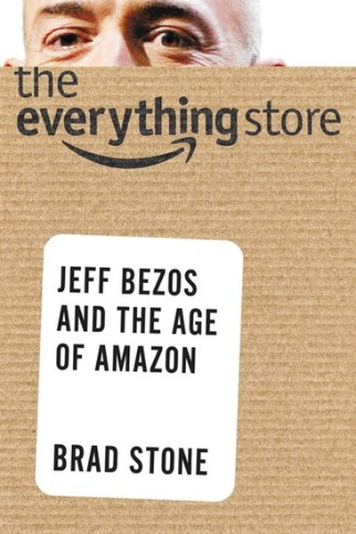

Library › Business & Startups
The Everything Store — Summary & Key Lessons

Jeff Bezos and the age of Amazon — the definitive inside story.
📖 OPEN THE FULL INTERACTIVE BREAKDOWN →🌐 Read it in Hindi, Hinglish, Gujarati, Tamil & 22 more languages — free, with audio.
💡 The Big Idea
Amazon's rise is a case study in a single obsession: the customer. Bezos built everything — logistics, pricing, algorithms, AWS — around a fanatical, long-term devotion to customer experience, often at the expense of short-term profit. The book shows how a bookseller became a logistics giant, a cloud monopoly and the 'everything store' — and what it cost the people inside.
🧠 The 7 Key Lessons
Lesson 1: Customer Obsession Beats Competitor Obsession
The Founding Vision
From day one, Bezos defined Amazon by a single principle: obsess over customers, not competitors. While rivals watched Amazon, Amazon watched the customer — and kept innovating while competitors kept reacting. The lesson: competitor obsession makes you a follower; customer obsession makes you a leader. The company that serves its customers best defines the game everyone else plays.
📖 Example: Amazon's one-click ordering, reviews and free returns were all decisions competitors thought were losses — each one became a customer magnet. The practical edge: 'customer obsession beats competitor obsession' is not a one-time decision — it's a habit that… Read the full example →
⚡ Do this: In your work, identify one decision you make based on what competitors do. Redesign it based purely on what your customer actually needs.
Lesson 2: Long-Term Thinking Requires Being Misunderstood
Day 1 Mentality
Amazon's famously low margins and reinvested profits made Wall Street call it 'Amazon.toast'. Bezos ignored them, repeatedly saying he was willing to be misunderstood for long periods. The lesson: game-changing strategies look like mistakes to people with short horizons. If everyone approves of your plan immediately, it's probably not ambitious enough. Learn to distinguish genuine feedback from short-term noise.
📖 Example: For years Amazon earned criticism for prioritizing growth over profit — until the infrastructure it built became the moat that competitors can't cross. Here's the part that usually gets missed: 'long' works quietly. You won't see it working in a day; you'll… Read the full example →
⚡ Do this: Identify one investment you're avoiding because it looks bad in the short term. If the 5-year case is strong, start a small version now.
Lesson 3: The Flywheel — Momentum Becomes a Moat
The Virtuous Cycle
Amazon's strategy is a flywheel: lower prices bring more customers; more customers attract more sellers; more sellers deepen selection; deeper selection lowers costs further. Each turn of the wheel makes the next turn easier. The lesson: build systems where success feeds success. Instead of one-off wins, design loops — in products, marketing or personal growth — where each result creates the conditions for the next.
📖 Example: Every Amazon innovation — Prime, Fulfillment by Amazon, AWS — accelerated the same flywheel rather than starting new ones. The real test of this lesson is a bad day: the principle that survives a crisis, a tight deadline and a doubting colleague is the one… Read the full example →
⚡ Do this: Map one loop in your life or business: what success creates more success? Remove one break in that loop this month.
Lesson 4: Experimentation Is a Discipline, Not a Gamble
Failure as Fuel
Amazon's culture celebrates controlled failure: the Fire Phone failed, but the team and lessons fed future wins. Bezos distinguishes small, reversible experiments — where failure is cheap — from big bets, where preparation must be extreme. The lesson: the goal is not to avoid failure but to fail at the right size. Cheap experiments, run constantly, are the research budget of every great organization.
📖 Example: Amazon runs thousands of A/B tests and quietly kills most ideas; the surviving few — like Prime and AWS — were refined through constant testing. In practice, 'experimentation is a discipline, not a gamble' shows up in tiny daily choices long before it shows… Read the full example →
⚡ Do this: Design one cheap experiment this week: a small test of a product, message or habit with a clear success metric and a kill switch.
Lesson 5: Frugality Forces Innovation
The Empty Chair
Bezos's frugality is legendary — desks made from doors, no perks. His argument: resource constraints breed creativity. When you can't buy your way out, you think your way out. The lesson: scarcity is a design tool. The teams that produce the most innovation are often the most constrained — budgets force focus, and focus produces breakthroughs that abundance never demands.
📖 Example: Amazon's door desks became a symbol: money spent on infrastructure, not on ego — and the discipline carried into every launch. Most people nod at this principle and change nothing. The gap between agreeing and acting is where the whole game is won or lost. Read the full example →
⚡ Do this: Take one project and cut its budget or scope by half. Force the creative constraints to do the work.
Lesson 6: Build the Infrastructure Others Depend On
AWS and the Platform Play
Amazon turned its internal computing infrastructure into AWS — selling its own capability to everyone else. The move transformed Amazon from a retailer into the backbone of the internet. The lesson: your internal advantages can become external products. The highest-leverage business move is building the platform that others build on — it converts your costs into everyone's dependency.
📖 Example: AWS started as spare server capacity and became a $60+ billion business — the ultimate example of monetizing your own operations. The uncomfortable truth about this lesson: it requires doing the boring version first — the unglamorous reps that nobody claps… Read the full example →
⚡ Do this: Identify one internal tool, skill or system you've built. Could someone else pay for it? Package a version and test the market.
Lesson 7: Intensity Has a Price — Culture Is a Choice
The Human Cost
Stone doesn't flinch from Amazon's dark side: brutal work culture, high turnover, relentless pace. The book's honest lesson: every culture is a trade-off, and the culture that maximizes output often sacrifices warmth. The lesson for leaders: choose your culture deliberately, and own the costs. There is no free lunch — the question is whether your people and your values can bear the price of your ambition.
📖 Example: Amazon's 'purposeful Darwinism' produced extraordinary results — and stories of crying at desks. Both facts are true, and both are part of the company. intensity Has a Price Read the full example →
⚡ Do this: Write down the culture you actually run, not the one you claim. What does it optimize for, and who pays the price? Adjust one thing.
✅ 5-Step Action Plan
- Redesign one competitor-driven decision around customer needs.
- Start one 'long-term misunderstood' investment in small form.
- Map your flywheel and fix one break in the loop.
- Run one cheap experiment with a kill switch this week.
- Turn one internal capability into a product others could use.
⚠️ When This Doesn't Work
Stone's 'Bezos's customer obsession built the everything store' is the definitive corporate biography ever — and the Fire Phone is the proof that even the everything store fails when it forgets its own rules: Amazon's first phone, built with total conviction and hundreds of millions of dollars, flopped so badly it was written off within a year — because Amazon obsessed over its own vision of the phone instead of the customer's actual needs. The caveat: customer obsession is a discipline, not a slogan — and even its inventor can forget it. The Fire Phone is the most reassuring story in the book: if Amazon can fail that hard and recover, so can you — as long as the obsession is real.
💀 The Graveyard Proves It
🔥 Amazon Fire Phone — Jeff Bezos's $170 Million Smartphone Flop. Burn: $170M+ written off; 3D gimmick phone discontinued in a year. Read the full case study →
💬 Best Quotes from The Everything Store
- “Your margin is my opportunity.”
- “We are willing to be misunderstood for long periods of time.”
- “If you're not stubborn, you'll give up on experiments too soon; if you're not flexible, you'll hit your head on the wall.”
Interactive version: mark lessons as read, listen in your language, share quote cards.